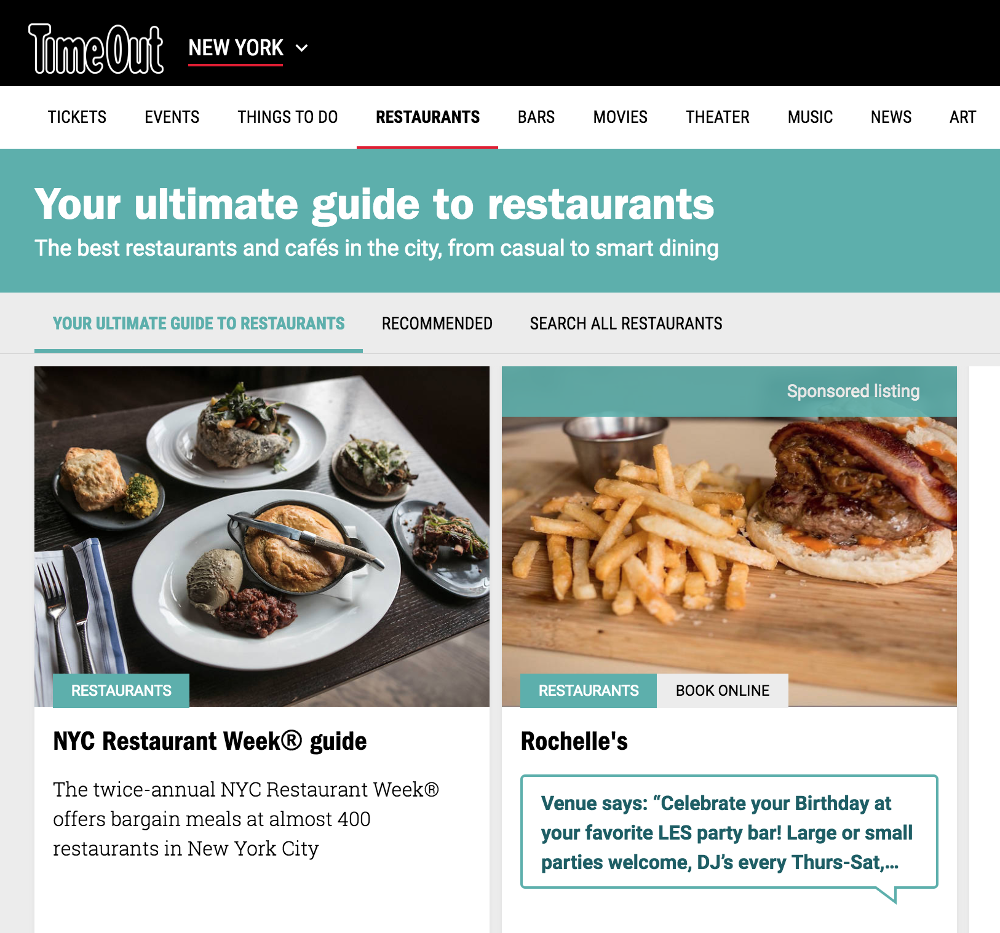

Timeout is one of my favorite websites. It gives tons of information that happens and will happen in New York City. Not even an event but also they introduces a lot of restaurants as well as bar, and shops every week. Also, a reason why I like this website is because bunch of hidden places are updated on this website every week so I'm always excited to know all the info.
#6